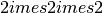

AtomEye atomistic configuration viewer¶
This module provides the AtomEyeViewer class, which is a high-level
interface for interactive visualisation of Atoms objects using a modified version of the AtomEye
atomistic configuration viewer.
Atoms and AtomsList
objects can also be visualised with the qlab module.
For example, to create and visualise and 8-atom silicon bulk cell:
from quippy.structures import diamond, supercell
from atomeye import AtomEyeViewer
d = diamond(5.43, 14)
viewer = AtomEyeViewer(d)
A window will pop up containing the silicon unit cell, which you can manipulate with the mouse, by issuing commands in the the python console or with a variety of AtomEye keyboard shortcuts. To save an image in PNG format:
viewer.capture('si8.png')

Then, to change the display to a  supercell of bulk silicon, change the background colour to black, set the size and save an image you’d do the following:
at = supercell(d, 2, 2, 2)
viewer.show(at)
viewer.change_bgcolor((0, 0, 0))
viewer.resize(400,300)
viewer.capture('si2x2x2.png')

Module attributes:
-
atomeye.viewers¶ Dictionary mapping window_id to
AtomEyeViewinstances. There is one entry for each currently open AtomEye view window.
-
atomeye.default_state¶ Dictionary of key/value pairs passed to
AtomEyeView.update()when a new window is created. Change this dictionary to modfiy the properties of new windows. The initial value is as follows:default_state = { 'variables' : {'n->xtal_mode': 1, 'n->suppress_printout': 1, 'n->bond_mode': 1, 'n->atom_r_ratio': 0.5, 'n->small_cell_err_handler': 1, 'key->BackSpace': 'load_config_backward' }, 'commands': ['xtal_origin_goto 0.5 0.5 0.5', 'toggle_parallel_projection'], 'cutoff_lengths': [] }
Module contents for atomeye:
Classes
AtomEyeViewer([atoms, viewer_id, copy, ...]) |
View an atomic configuration or trajectory with AtomEye |
-
class
atomeye.AtomEyeViewer(atoms=None, viewer_id=None, copy=None, frame=0, delta=1, nowindow=False, echo=True, block=False, verbose=True, **showargs)[source]¶ View an atomic configuration or trajectory with AtomEye
Class to represent an AtomEye viewer window. Each viewer class communicates with one AtomEye thread.
There are wrapper methods for most of the AtomEye 3 commands. The names of these methods match the names of the correspondning commands, and the arguments follow the syntax given on the AtomEye 3 help page.
Additional keyword arguments are passed along to the
show()method.Import
AtomEyeViewattributes:-
atoms¶ Atomsobject or sequence being viewed. This will be set toNoneif this instance was created without anobjparameter, which means we’re viewing theA3logo.
-
frame¶ Current frame, in range 1 to len(self.atoms).
-
delta¶ Frame increment rate when
DeleteandInsertare preseed. Equivalent to AtomEyen->glob_advancesetting.
-
echo¶ If set to True, echo all AtomEye commands to stdout
-
block¶ If set to True, wait for all AtomEye command to finish executing before returning from function calls. Default is False.
-
verbose¶ If set to True (default), print frame paramters on each
redraw(), and print information about each atom when it is right clicked.
Parameters: atoms :
quippy.atoms.Atomsorase.atoms.Atomsobject, or a list of objects.Configuration or trajectory to view.
viewer_id : integer or None
If None, open a new viewer. Otherwise call the :meth:show() method in the existing viewer with this ID.
copy : integer or None
Viewer ID of another viewer from which to copy the viewpoint and other default settings.
frame : integer
Initial frame to show (should be in range
0..len(atoms)-1)delta : integer
Increment/decrement rate for frames when [Insert] and [Delete] are pressed
nowindow : bool
If True, open AtomEye without a visible window. Useful for faster rendering of movies
echo : bool
If True, echo all commands to the screen. Useful mainly for debugging.
block : bool
If True, wait for commands to finish executing in AtomEye thread before returning (i.e. run asynchronously)
verbose : bool
If True, print information when changing frame and when an atom is clicked
Attributes
frameGet or set the current frame Methods
advance(delta)Move the camera forward by delta. aux_property_coloring(auxprop)Colour the atoms by the auxiliary property with name or index auxprop. backward([delta])Move backward by delta frames (default values is self.delta). capture(filename[, resolution])Render the current view to image filename central_symmetry_coloring()Colour atoms by centro-symmetry parameter. change_atom_r_ratio(delta)Change the size of the balls used to draw the atoms by delta. change_aux_colormap(n)Select the n-th auxiliary property colourmap. change_aux_property_threshold(lower, upper)Change the lower and upper aux property thresholds. change_bgcolor(color)Change the viewer background colour to color, which should be a RGB tuple with three floats in range 0..1. change_bond_radius(delta)Change the radius of the cylinders used the draw bonds by delta. close()Close this viewer window. cutting_plane(n, d, s)Create a new cutting plane with index n, normal d, and fractional displacement s. draw_arrows(property[, scale_factor, ...])Draw arrows on each atom, based on a vector property find_atom(i)Set the anchor to the atom with index i. first()Show the first frame (frame 0). forward([delta])Move forward by delta frames (default value is self.delta). gcat([update])Get current atoms - return Atoms object currently being visualised. get_size_angstrom([state])Return (width, height) in Angstrom of currently projected view get_size_pixels([state])Return (width, height) in pixels of this viewer get_visible()Return list of indices of atoms currently visible in this viewer. key(key)Simulate pressing key on the keyboard. last()Show the last frame, i.e. load_atom_color(filename)Load atom colours from a .clr file. load_aux(filename)Load aux property values from a .aux file. load_script(filename)Load AtomEye viewer settings from a file using the AtomEye load_scriptcommandnormal_coloring()Return to normal colouring of the atoms (key “o”). rcut_patch(sym1, sym2, value[, absolute])Change the cutoff distance for sym1–sym2 bonds by delta. redraw()Redraw this AtomEye window, keeping Atoms and settings the same. reset_aux_property_thresholds()Reset aux property thresholds to automatic values. resize(width, height)Resize the current window to width x height pixels. rotate(axis, theta)Rotate around axis by angle theta. run_command(command)Run a command in this AtomEye thread. run_script(script)Run commands from the file script, in a blocking fashion. save(filename)Save AtomEye viewer settings to a file. scat(atoms[, frame])Set current atoms (and optionally also current frame) setp(key, value)Run the AtomEye command “set key value”. shift_cutting_plane(delta)Shift the current cutting plane by an amount delta. shift_xtal(axis, delta)Shift crystal within periodic boundaries along axis by delta (key “Shift+left/right/up/down”). show([atoms, property, frame, arrows])Update what is shown in this AtomEye viewer window. start([copy, nowindow])Start the AtomEye thread, wait for it to load and apply default commands. toggle_aux_property_thresholds_rigid()Toggle between floating and rigid aux property thresholds when moving between frames toggle_aux_property_thresholds_saturation()Toggle between saturated colouring and invisibility for values outside aux prop thresholds. toggle_bond_mode()Turn on or off bonds. toggle_coordination_coloring()Turn on or off colouring by coordination number (key “k”) toggle_parallel_projection()Toggle between parallel and perspective projections. toggle_small_cell_mode()Toggle between two different behaviours for when cell is smaller than r_cut/2: 1. translate(axis, delta)Translate system along axis by an amount delta (key “Ctrl+left/right/up/down”) update(state)Update settings from the dictionary state. wait()Sleep until this AtomEye viewer has finished processing all queued events. xtal_origin_goto(s)Move the crystal origin to fractional coordinates s -
aux_property_coloring(auxprop)[source]¶ Colour the atoms by the auxiliary property with name or index auxprop.
-
capture(filename, resolution=None)[source]¶ Render the current view to image filename
Format is determined from file extension: .png, .jpeg, or .eps.
-
change_aux_property_threshold(lower, upper)[source]¶ Change the lower and upper aux property thresholds.
-
change_bgcolor(color)[source]¶ Change the viewer background colour to color, which should be a RGB tuple with three floats in range 0..1.
-
cutting_plane(n, d, s)[source]¶ Create a new cutting plane with index n, normal d, and fractional displacement s.
-
draw_arrows(property, scale_factor=0.0, head_height=0.1, head_width=0.05, up=(0.0, 1.0, 0.0))[source]¶ Draw arrows on each atom, based on a vector property
Parameters: property : string
Name of the array to use for arrow vectors. Use
Noneto turn off previous arrows.scale_factor : float
Override length of arrows. 1 unit = 1 Angstrom; default value of 0.0 means autoscale.
head_height : float
Specify height of arrow heads in Angstrom.
head_width : float
up : 3-vector (tuple, list or array)
Specify the plane in which the arrow heads are drawn. Arrows are drawn in the plane which is common to their direction and this vector. Default is
[0.,1.,0.].
-
gcat(update=False)[source]¶ Get current atoms - return Atoms object currently being visualised.
If update=False (the default), we return what is currently being visualised, even if this is not in sync with self.atoms[self.frame].
-
get_size_angstrom(state=None)[source]¶ Return (width, height) in Angstrom of currently projected view
Assumes object lies in plane z=0
-
key(key)[source]¶ Simulate pressing key on the keyboard.
The syntax for keystrokes is described on the AtomEye 3 commands help page
-
load_script(filename)[source]¶ Load AtomEye viewer settings from a file using the AtomEye
load_scriptcommandrun_script()is more robust as the script is run line by line in a blocking sense.
-
rcut_patch(sym1, sym2, value, absolute=False)[source]¶ Change the cutoff distance for sym1–sym2 bonds by delta.
e.g. to increase cutoff for Si-Si bonds by 0.5 A use:
viewer.rcut_patch('Si', 'Si', 0.5)
With absolute set to True, value is used to set the absolute cutoff distance for sym1–sym2 bonds, e.g.:
viewer.rcut_patch('Si', 'Si', 2.50, True)
-
run_command(command)[source]¶ Run a command in this AtomEye thread.
The command is queued for later execution, unless
blockis True.This functionality is also available by calling an instance directly, i.e. the following commands are equivalent:
viewer.run_command('toggle_coordination_coloring') viewer('toggle_coordination_coloring')
Parameters: command : string
The command to pass to AtomEye
-
shift_xtal(axis, delta)[source]¶ Shift crystal within periodic boundaries along axis by delta (key “Shift+left/right/up/down”).
-
show(atoms=None, property=None, frame=None, arrows=None)[source]¶ Update what is shown in this AtomEye viewer window.
When called with no arguments,
show()is equivalent toredraw().Parameters: atoms : class:quippy.atoms.Atoms or `ase.atoms.Atoms
instance, or a list of instances
property : name of the quippy :
~quippy.atoms.propertiesentry or ASE
ase.atoms.arraysentry used to colour the atoms (e.g."charge")frame : Zero-based index of the frame to show
(applies only when atoms is a list of Atoms objects)
arrows : is the name of a vector property to use to draw arrows
on the atoms (e.g.
"force")
-
start(copy=None, nowindow=False)[source]¶ Start the AtomEye thread, wait for it to load and apply default commands.
Parameters: copy : integer
Viewer ID of another AtomEye window from which to copy settings
nowindow : bool
If True, create an AtomEye thread without a visible window. Useful for rendering movies.
-
toggle_aux_property_thresholds_rigid()[source]¶ Toggle between floating and rigid aux property thresholds when moving between frames
-
toggle_aux_property_thresholds_saturation()[source]¶ Toggle between saturated colouring and invisibility for values outside aux prop thresholds.
-
toggle_small_cell_mode()[source]¶ - Toggle between two different behaviours for when cell is smaller than r_cut/2:
- clip cell - some neigbours may be lost (default)
- replicate cell along narrow directions
-
translate(axis, delta)[source]¶ Translate system along axis by an amount delta (key “Ctrl+left/right/up/down”)
-
update(state)[source]¶ Update settings from the dictionary state.
Runs the AtomEye command
set key valuefor each pair. Valid settings are listed on the AtomEye 3 settings help page
-
xtal_origin_goto(s)[source]¶ Move the crystal origin to fractional coordinates s
For example, use
s=[0.5, 0.5, 0.5]to shift by half the cell along the ,
,  and
and  lattice vectors.
lattice vectors.
-
frame Get or set the current frame
-